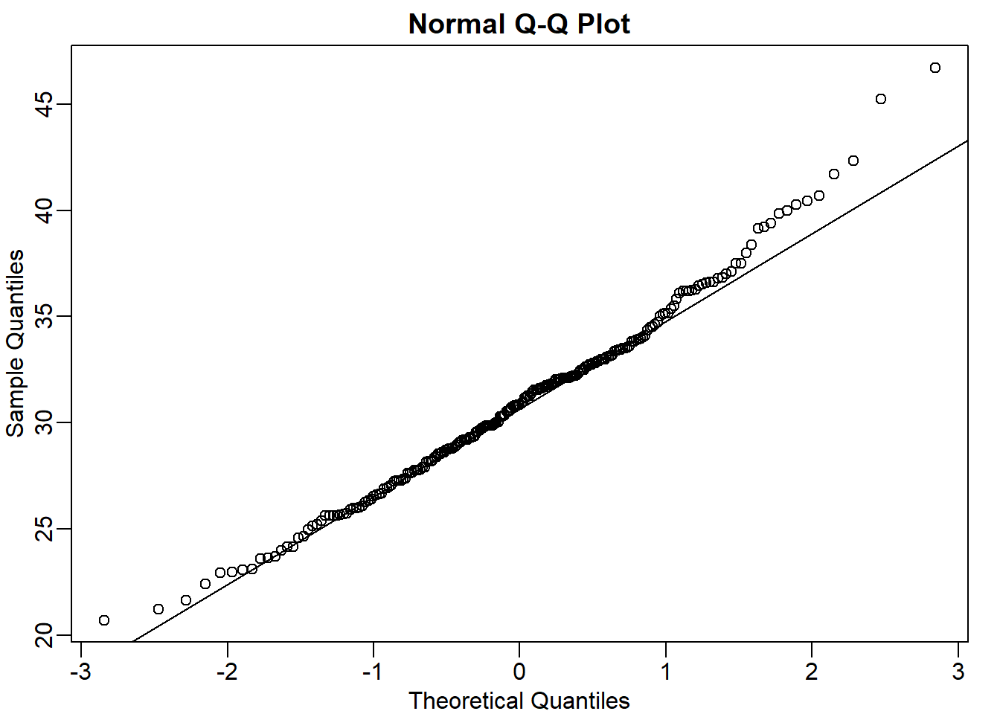
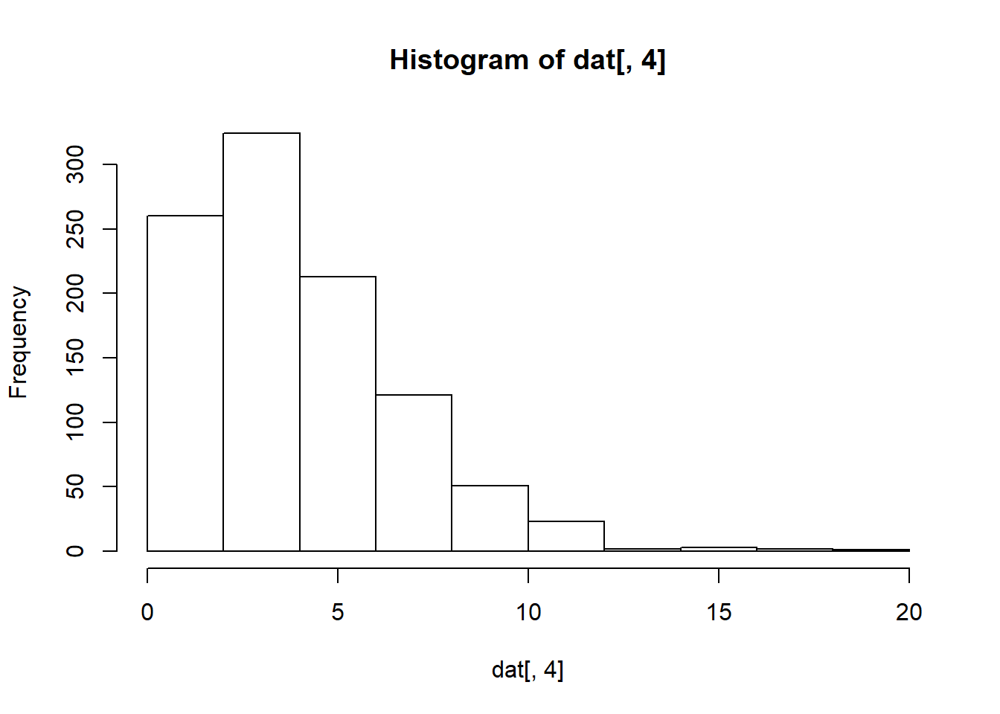
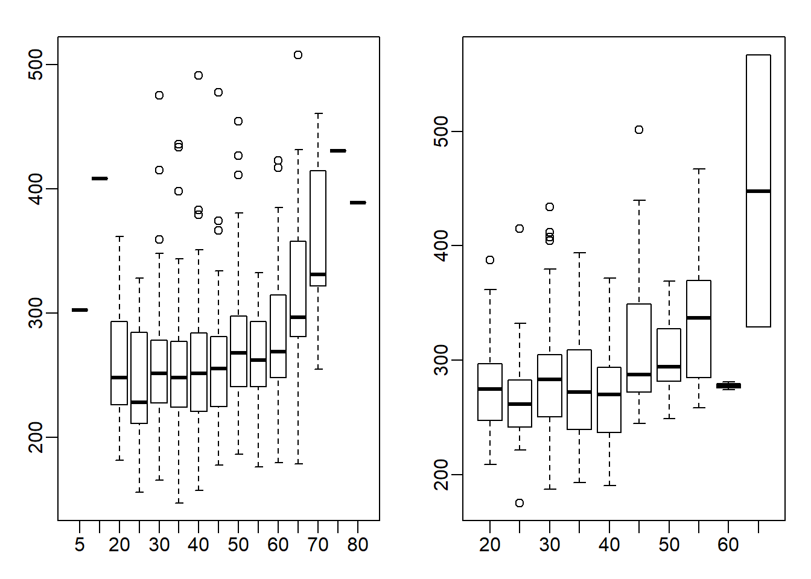

Chapter 3 Exploratory Data Analysis
Note: I have rephrased some parts of the questions for clarity. These changes are bolded. Due to the random numbers, the exact values of the answers, despite the same seeds, might differ. So please be mindful of that.
First, upload necessary package(s).
library(dplyr) # uplaods the function filter() and %>%
library(rafalib) # important for plotting with base R3.8 Exercises
Question 1
Given the above histogram, how many people are between the ages of 35 and 45?
6 people
Question 2
The InsectSprays dataset is included in R. The dataset reports the counts of insects in agricultural experimental units treated with different insecticides. Make a boxplot and determine which insecticide appears to be most effective (has the lowest median).

C has the lowest median and is, therefore, most effective.
Question 3
Download the data and load them by typing load(skew.RData) into R. Use exploratory data analysis tools to determine which two columns are different from the rest. Which column has
positive skew (a long tail to the right)?


Notice that boxplot function automatically splits each column of the dat (total 9 columns). Hence, there are 9 boxplots total, each of which has 1000 points; the dimension of dat is 1000 x 9 (dim(dat)).
Negative skew refers to a longer or fatter tail on the left side of the distribution, while positive skew refers to a longer or fatter tail on the right.
Question 4
Which column has negative skew (a long tail to the left)?
Question 5
Let’s consider a random sample of finishers from the New York City Marathon in 2002. This dataset can be found in the UsingR package. Load the library and then load the nym.2002 dataset.
Use boxplots and histograms to compare the finishing times of males and females. Which of the following best describes the difference?
data(nym.2002, package="UsingR")
male <- nym.2002 %>% filter(gender == 'Male')
female <- nym.2002 %>% filter(gender == 'Female')
mypar(1,2)
hist(female$time, xlim = c(100,600))
hist(male$time, xlim = c(100,600))
Both histograms have a similar distribution (skewed to the right). But the center of the histogram seems to be different. We can check this by calculating the absolute difference of the mean and median.
## [1] 23.11574## [1] 21.70833There is a difference of around 21-23 minutes between males and females. So answer C seems to be appropriate: Males and females have similar right skewed distributions, with the former 20 minutes shifted to the left.
Question 6
Use dplyr to create two new data frames: males and females, with the data for each gender. For males, what is the Pearson correlation between age and time to finish?
Question 7
For females, what is the Pearson correlation between age and time to finish?

Question 8
If we interpret these correlations without visualizing the data, we would conclude that the older we get, the slower we run marathons, regardless of gender. Look at scatterplots and boxplots of times stratified by age groups (20-24, 25-30, etc.). After examining the data, what is a more reasonable conclusion?
groups_m <- split(male$time, floor(male$age/5)*5) # 10-14, 15-19, etc
groups_f <- split(female$time, floor(female$age/5)*5) # 10-14, 15-19, etc
mypar(1,2)
boxplot(groups_m)
boxplot(groups_f)
This is a tricky question because the question asks you to stratify the data into groups. Stratification can be achieved via split function. To have each group a range of 5 (ex. 25-30), all the age numbers will have to be rounded up or down so that the resulting numbers will be divisible by 5. I rounded the numbers down by using the floor function. As a result, 40 represents the 40-44 age group. You can also use the ceiling function to stratify the data, which will then be rounded up. So, 45 represents 41-45 age group. In the example below, age of 42 is categorized using both floor and ceiling functions.
## [1] 40## [1] 45The appropriate answer is A: Finish times are constant up until about our 40s, then we get slower.
Question 9
When is it appropriate to use pie charts or donut charts?
Never (answer choice D)
Question 10
The use of pseudo-3D plots in the literature mostly adds:
Confusion (answer choice D)
3.11 Exercises
First load the data.

chick = reshape(ChickWeight, idvar=c("Chick","Diet"), timevar="Time",
direction="wide")
chick = na.omit(chick)Question 1
Focus on the chick weights on day 4 (check the column names of chick and note the numbers). How much does the average of chick weights at day 4 increase if we add an outlier measurement of 3000 grams? Specifically, what is the average
weight of the day 4 chicks, including the outlier chick, divided by the average of the weight of the day 4 chicks without the outlier. Hint: use c to add a number
to a vector.
chick_w4 <- chick[,'weight.4']
chick_w4_add <- append(chick_w4, 3000)
# or use function c
# chick_w4_add <- c(chick_w4, 3000)
chick_w4_add ## [1] 59 58 55 56 48 59 57 59 52 63 56 53
## [13] 62 61 55 54 62 64 61 58 62 57 58 58
## [25] 59 59 62 65 63 63 64 61 56 61 61 66
## [37] 66 63 69 61 62 66 62 64 67 3000## [1] 63.90966## [1] 2.062407Question 2
In exercise 1, we saw how sensitive the mean is to outliers. Now let’s see what happens when we use the median instead of the mean. Compute the same ratio, but now using median instead of mean. Specifically, what is the median weight of the day 4 chicks, including the outlier chick, divided by the median of the weight of the day 4 chicks without the outlier.
## [1] 0## [1] 1Question 3
Now try the same thing with the sample standard deviation (the sd function in R). Add a chick with weight 3000 grams to the chick weights from day 4. How much does the standard deviation change? What’s the standard deviation with the outlier chick divided by the standard deviation without the outlier chick?
## [1] 429.1973## [1] 101.2859Question 4
Compare the result above to the median absolute deviation in R, which is calculated with the mad function. Note that the mad is unaffected by the addition of a single outlier. The mad function in R includes the scaling factor 1.4826, such that mad and sd are very similar for a sample from a normal distribution. What’s the MAD with the outlier chick divided by the MAD without the outlier chick?
## [1] 0## [1] 1Question 5
Our last question relates to how the Pearson correlation is affected by an outlier as compared to the Spearman correlation. The Pearson correlation between x and y is given in R by cor(x,y). The Spearman correlation is given by cor(x,y,method="spearman").
Plot the weights of chicks from day 4 and day 21. We can see that there is some general trend, with the lower weight chicks on day 4 having low weight again on day 21, and likewise for the high weight chicks.
Calculate the Pearson correlation of the weights of chicks from day 4 and day 21. Now calculate how much the Pearson correlation changes if we add a chick that weighs 3000 on day 4 and 3000 on day 21. Again, divide the Pearson correlation with the outlier chick over the Pearson correlation computed without the outliers.
## [1] 205 215 202 157 223 157 305 98 124 175 205 96 266 142 157
## [16] 117 331 167 175 74 265 251 192 233 309 150 256 305 147 341
## [31] 373 220 178 290 272 321 204 281 200 196 238 205 322 237 264## [1] 0.4159499chick_w21_add <- append(chick_w21, 3000)
cor(chick_w4_add, chick_w21_add) # correlation after outlier## [1] 0.9861002## [1] 2.370719Question 6
Save the weights of the chicks on day 4 from diet 1 as a vector x. Save the weights of the chicks on day 4 from diet 4 as a vector y. Perform a t-test comparing x and y(in R the function t.test(x,y) will perform the test). Then perform a Wilcoxon test of x and y (in R the function wilcox.test(x,y) will perform the test). A warning will appear that an exact p-value cannot be calculated with ties,
so an approximation is used, which is fine for our purposes.
Perform a t-test of x and y, after adding a single chick of weight 200 grams to x (the diet 1 chicks). What is the p-value from this test? The p-value of a test is available with the following code: t.test(x,y)$p.value
x <- chick %>% filter(Diet == 1)
x <- x[,'weight.4']
y <- chick %>% filter(Diet == 4)
y <- y[,'weight.4']
t.test(x,y)$p.value # t.test result with no outlier## [1] 7.320259e-06## Warning in wilcox.test.default(x, y): cannot compute exact p-
## value with ties## [1] 0.0002011939## [1] 0.9380347Question 7
Do the same for the Wilcoxon test. The Wilcoxon test is robust to the outlier. In addition, it has fewer assumptions than the t-test on the distribution of the underlying data.
## Warning in wilcox.test.default(x_add, y): cannot compute exact p-
## value with ties## [1] 0.0009840921Question 8
We will now investigate a possible downside to the Wilcoxon-Mann-Whitney test statistic. Using the following code to make three boxplots, showing the true Diet 1 vs 4 weights, and then two altered versions: one with an additional difference of 10 grams and one with an additional difference of 100 grams. Use the x and y as defined above, NOT the ones with the added outlier.

What is the difference in t-test statistic (obtained by t.test(x,y)$statistic) between adding 10 and adding 100 to all the values in the group y? Take the the t-test statistic with x and y+10 and subtract the t-test statistic with x and y+100. The value should be positive.
Question 9
Examine the Wilcoxon test statistic for x and y+10 and for x and y+100. Because the Wilcoxon works on ranks, once the two groups show complete separation, that is, all points from group y are above all points from group x, the statistic will not change, regardless of how large the difference grows. Likewise, the p-value has a minimum value, regardless of how far apart the groups are. This means that the Wilcoxon test can be considered less powerful than the t-test in certain contexts. In fact, for small sample sizes, the p-value can’t be very small, even when the difference is very large. What is the p-value if we compare c(1,2,3) to c(4,5,6) using a Wilcoxon test?
## Warning in wilcox.test.default(x, y + 10): cannot compute exact
## p-value with ties## [1] 5.032073e-05## Warning in wilcox.test.default(x, y + 100): cannot compute exact
## p-value with ties## [1] 5.032073e-05## [1] 0.1Question 10
What is the p-value if we compare c(1,2,3) to c(400,500,600) using a Wilcoxon test?